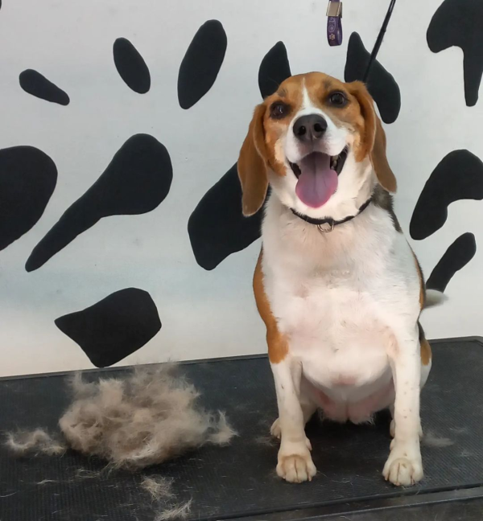

Що таке грумінг?
Не секрет, що люди живуть родинами. Родина необхідна людині для того, що б не відчувати себе самотнім і відірваним від суспільства. Члени кожної родини піклуються один про одного, намагаються допомогти один одному. І коли в нашу сім'ю потрапляє домашня тварина - вона так само стає членом родини і має повне право на турботу, захист і повноцінний догляд. І наш обов'язок - забезпечити наших "братів менших" турботою, захистом і доглядом.
Грумінг це невід'ємна частина загального догляду за твариною. Він складається з деякого числа процедур, необхідних для підтримки якісної гігієни і загального здоров'я наших вихованців.
Розглянемо докладніше необхідні процедури по догляду за домашньою твариною: